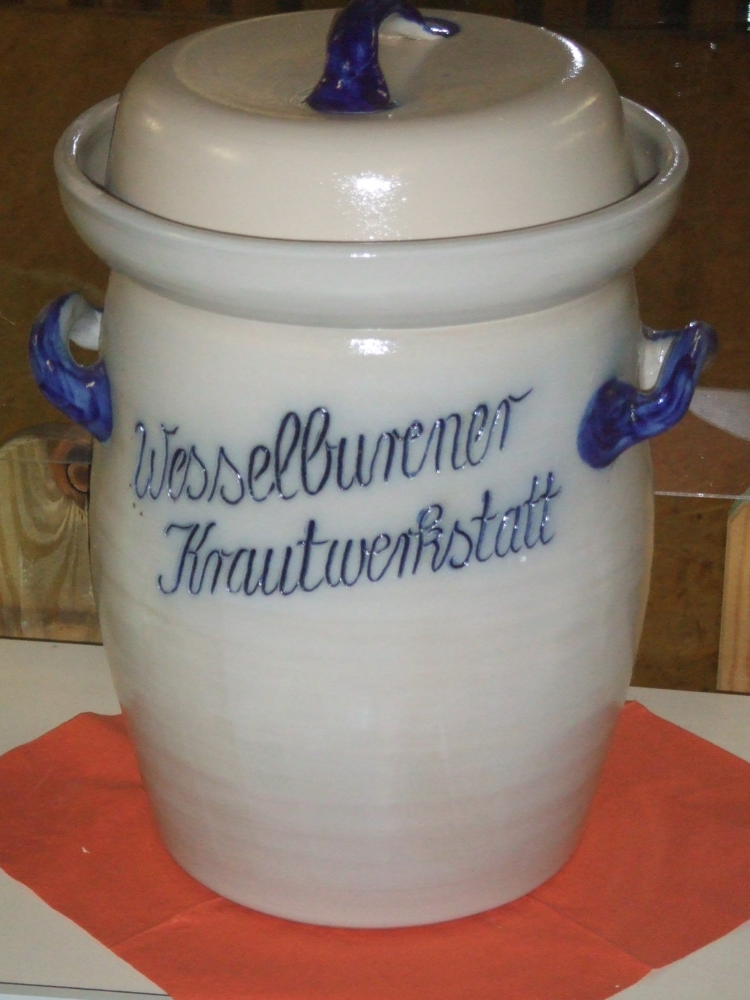

Fermentation is the process of cultivating a culture of anaerobic bacteria and/or yeast. It's especially useful for preserving foods, as well as transforming them into something new and special. Some products of fermentation that you may or may not be familiar with:
It's easy to get started creating your own examples of fermentation at home. For sauer kraut made from cabbage, a large crock is the best device to use. See our ferment types page for more specific information on what you can create at home.
Many ferments are made simply by brining the food, such as cabbage in the case of kraut and kimchi. Others must be cultured, that is, you add a SCOBY (symbiotic culture of bacteria and yeast). Kombucha and kefir are two examples.
As referenced in the table on our ferment types page, you'll need some tools that you may or may not yet have around the kitchen. These include the following: